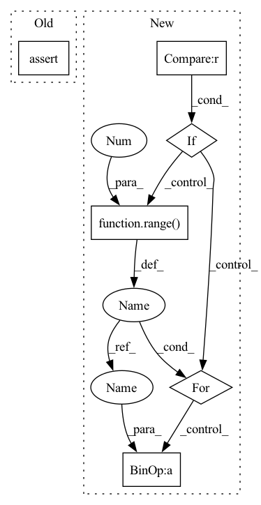

Pattern ID :33547
Before Change
// constant folding
const = None
if self.bufs[buf_index]._base_shape == (1,) and self.bufs[buf_index]._backing is not None:
assert self.buftokens[buf_index].typ == Types.FLOAT
if buf_index != 0: self.bufs_to_delete.add(buf_index)
const = Token(f"({self.bufs[buf_index]._backing[0]}f)", self.buftokens[buf_index].typ)
After Change
if buf_index != 0: self.bufs_to_delete.add(buf_index)
const = Token(f"({self.bufs[buf_index]._backing[0]}f)", Types.FLOAT)
can_merge = (not self.bufs[buf_index].st.needs_valid() and len(self.bufs[buf_index].st.views) == 1) or "Image" in str(type(self.bufs[buf_index]._buf))
should_upcast = const is None and can_merge and self.buftokens[buf_index].can_float4()
tokens = []
for o in self.buftokens[buf_index].offsets():
key = f"val{buf_index}_{o}" if o >= 0 else f"val{buf_index}_m{-o}"
if (buf_index, o) not in self.loaded_keys:
idxy, valid = self.sts[buf_index].expr_idxs(o)
if const is not None:
ldr = const
elif isinstance(self.bufs[buf_index]._buf, CLImage):
assert should_upcast, f"Image requires upcasting to FLOAT4 {self.buftokens[buf_index]}"
ldr = Token(f"read_imagef({self.buftokens[buf_index].tok}, smp, {self.image_idx(buf_index, idxy, VALIDHACKS)}) /* {self.bufs[buf_index]._base_shape} */", Types.FLOAT4)
elif should_upcast:
ldr = Token(f"(({CLProgram.buffer_prefix}float4*){self.buftokens[buf_index].tok})[{(idxy//4).render(render_cl)}]", Types.FLOAT4)
else:
ldr = Token(f"{self.buftokens[buf_index].tok}[{idxy.render(render_cl)}]", Types.FLOAT)
ldr = ldr if valid.min == 1 or (VALIDHACKS and isinstance(self.bufs[buf_index]._buf, CLImage)) else (Token(f"({valid.render(render_cl)} ? {ldr.tok} : 0.0f)", ldr.typ) if valid.max == 1 else Token("0.0f", ldr.typ))
if const is not None:
self.loaded_keys[(buf_index,o)] = ldr
else:
self.kernel.append(f"{ldr.decltype()} {key} = {ldr.tok};\n")
if should_upcast:
for j in range(4 ):
self.loaded_keys[(buf_index,o+j )] = Token(key+f".{"xyzw"[j]}", Types.FLOAT)
else:
self.loaded_keys[(buf_index,o)] = Token(key, Types.FLOAT)
tokens.append(self.loaded_keys[(buf_index,o)])In pattern: SUPERPATTERN
Frequency: 4
Non-data size: 6
Instances Fragment ID: 96573104
Project Name: geohot/tinygrad
Commit Name: c4c2c28738c95929297bad30d4d277c677aef965
Time: 2023-02-22
Author: 72895+geohot@users.noreply.github.com
File Name: tinygrad/llops/ops_gpu.py
M Class Name: CLASTKernel
N Class Name: CLASTKernel
M Method Name: load(2)
N Method Name: load(2)
M Parent Class: ASTKernel
N Parent Class: ASTKernel
M File Name: tinygrad/llops/ops_gpu.py
N File Name: tinygrad/llops/ops_gpu.py
M Start Line: 81
M End Line: 103
N Start Line: 85
N End Line: 117
Before Change
self.preactivation = preactivation
self._incremental_n_modes = incremental_n_modes
assert len(self.layer_configs) == n_layers
if domain_padding is not None and domain_padding > 0:After Change
l_config["res_scaling"] = uno_layers["res_scaling"][l]
self.layer_configs.append(l_config)
if self.horizontal_skips_map is None :
self.horizontal_skips_map = {}
for i in range( n_layers//2,0 ,):
self.horizontal_skips_map[n_layers - i -1] = i
if domain_padding is not None and domain_padding > 0: Fragment ID: 96573107
Project Name: neural-operator/fourier_neural_operator
Commit Name: 7a8f1452af3fa7f1d287d503e996c402f693cfb6
Time: 2023-04-15
Author: ashiqbuet14@gmail.com
File Name: neuralop/models/uno.py
M Class Name: UNO
N Class Name: UNO
M Method Name: __init__(28)
N Method Name: __init__(28)
M Parent Class: nn.Module
N Parent Class: nn.Module
M File Name: neuralop/models/uno.py
N File Name: neuralop/models/uno.py
M Start Line: 119
M End Line: 142
N Start Line: 123
N End Line: 167
Before Change
assert ratio_ul >= 1 and 0 < p_cutoff <= 1
// mixup args
assert mix_mode in [
"mixup", "manifoldmix", "cutmix", "saliencymix", "resizemix", "fmix"]
if mix_mode in ["manifoldmix"]:
assert 0 == min(mix_args[mix_mode]["layer"]) and max(mix_args[mix_mode]["layer"]) < 4After Change
self.idx_list = [i for i in range(len(self.mix_mode))]
self.mix_args = mix_args
self.mix_prob = mix_prob if isinstance(mix_prob, list) else None
if self.mix_prob is not None :
assert len(self.mix_prob) == len(self.alpha) and abs(sum(self.mix_prob)-1e-10) <= 1, \
"mix_prob={}, sum={}, alpha={}".format(self.mix_prob, sum(self.mix_prob), self.alpha)
for i in range(1 , len(self.mix_prob)):
self.mix_prob[i] = self.mix_prob[i] + self.mix_prob[i- 1]
assert label_rescale in ["labeled", "unlabeled", "both", "none"]
self.label_rescale = label_rescale
assert lam_bias in ["labeled", "unlabeled", "rand"] Fragment ID: 96573109
Project Name: westlake-ai/openmixup
Commit Name: a4d82ebee5dd362b928569662920873822aa8236
Time: 2022-02-18
Author: 1070535169@qq.com
File Name: openmixup/models/semisup/dmixmatch.py
M Class Name: DMixMatch
N Class Name: DMixMatch
M Method Name: __init__(21)
N Method Name: __init__(20)
M Parent Class: nn.Module
N Parent Class: nn.Module
M File Name: openmixup/models/semisup/dmixmatch.py
N File Name: openmixup/models/semisup/dmixmatch.py
M Start Line: 107
M End Line: 114
N Start Line: 71
N End Line: 127
Before Change
with contextlib.closing(wave.open(path, "rb")) as wf:
num_channels = wf.getnchannels()
assert num_channels == 1
sample_width = wf.getsampwidth()
assert sample_width == 2
sample_rate = wf.getframerate()After Change
assert sample_rate in (8000, 16000, 32000, 48000)
pcm_data = wf.readframes(wf.getnframes())
// 多通道通道转单通道
if num_channels != 1 :
data = []
for i in range(0 , len(pcm_data), sample_width * num_channels):
data.append(pcm_data[i:i + sample_width])
pcm_data = b"".join(data)
return pcm_data, sample_rate
Fragment ID: 96573110
Project Name: yeyupiaoling/masr
Commit Name: fd3d30bf91fd3d11a8e0fd9e7dbc608541b5db1a
Time: 2022-01-12
Author: yeyupiaoling@foxmail.com
File Name: masr/utils/audio_vad.py
M Class Name: AnonimousClass
N Class Name: AnonimousClass
M Method Name: read_wave(1)
N Method Name: read_wave(1)
M Parent Class:
N Parent Class:
M File Name: masr/utils/audio_vad.py
N File Name: masr/utils/audio_vad.py
M Start Line: 15
M End Line: 15
N Start Line: 14
N End Line: 26
Before Change
// constant folding
const = None
if self.bufs[buf_index]._base_shape == (1,) and self.bufs[buf_index]._backing is not None:
assert self.buftokens[buf_index].typ == Types.FLOAT
if buf_index != 0: self.bufs_to_delete.add(buf_index)
const = Token(f"({self.bufs[buf_index]._backing[0]}f)", self.buftokens[buf_index].typ)
After Change
if buf_index != 0: self.bufs_to_delete.add(buf_index)
const = Token(f"({self.bufs[buf_index]._backing[0]}f)", Types.FLOAT)
can_merge = (not self.bufs[buf_index].st.needs_valid() and len(self.bufs[buf_index].st.views) == 1 ) or "Image" in str(type(self.bufs[buf_index]._buf))
should_upcast = const is None and can_merge and self.buftokens[buf_index].can_float4()
tokens = []
for o in self.buftokens[buf_index].offsets():
key = f"val{buf_index}_{o}" if o >= 0 else f"val{buf_index}_m{-o}"
if (buf_index, o) not in self.loaded_keys:
idxy, valid = self.sts[buf_index].expr_idxs(o)
if const is not None:
ldr = const
elif isinstance(self.bufs[buf_index]._buf, CLImage):
assert should_upcast, f"Image requires upcasting to FLOAT4 {self.buftokens[buf_index]}"
ldr = Token(f"read_imagef({self.buftokens[buf_index].tok}, smp, {self.image_idx(buf_index, idxy, VALIDHACKS)}) /* {self.bufs[buf_index]._base_shape} */", Types.FLOAT4)
elif should_upcast:
ldr = Token(f"(({CLProgram.buffer_prefix}float4*){self.buftokens[buf_index].tok})[{(idxy//4).render(render_cl)}]", Types.FLOAT4)
else:
ldr = Token(f"{self.buftokens[buf_index].tok}[{idxy.render(render_cl)}]", Types.FLOAT)
ldr = ldr if valid.min == 1 or (VALIDHACKS and isinstance(self.bufs[buf_index]._buf, CLImage)) else (Token(f"({valid.render(render_cl)} ? {ldr.tok} : 0.0f)", ldr.typ) if valid.max == 1 else Token("0.0f", ldr.typ))
if const is not None:
self.loaded_keys[(buf_index,o)] = ldr
else:
self.kernel.append(f"{ldr.decltype()} {key} = {ldr.tok};\n")
if should_upcast:
for j in range(4 ):
self.loaded_keys[(buf_index,o+ j)] = Token(key+f".{"xyzw"[j]}", Types.FLOAT)
else:
self.loaded_keys[(buf_index,o)] = Token(key, Types.FLOAT)
tokens.append(self.loaded_keys[(buf_index,o)]) Fragment ID: 96573112
Project Name: geohot/tinygrad
Commit Name: c4c2c28738c95929297bad30d4d277c677aef965
Time: 2023-02-22
Author: 72895+geohot@users.noreply.github.com
File Name: tinygrad/llops/ops_gpu.py
M Class Name: CLASTKernel
N Class Name: CLASTKernel
M Method Name: load(2)
N Method Name: load(2)
M Parent Class: ASTKernel
N Parent Class: ASTKernel
M File Name: tinygrad/llops/ops_gpu.py
N File Name: tinygrad/llops/ops_gpu.py
M Start Line: 81
M End Line: 103
N Start Line: 85
N End Line: 117